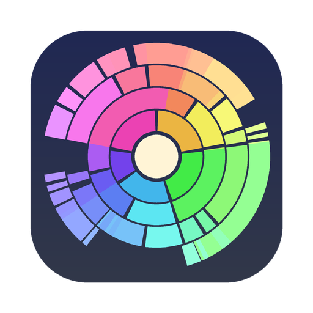

Dandelion scans your disk and draws everything on it as one interactive map, so the giant forgotten folders jump right out. Then you clear them out in a couple of clicks.
Click a folder to go into it, and click the middle to come back out. Click a file to collect it, then send it to the Trash.
Features
The good parts of the paid disk cleaners, built into one small native app that's yours to keep, read and change.
Walks your disk the same way du does, split across every core of your Mac. Hundreds of gigabytes in under a minute.
Every ring is a folder level and every slice is its true share. Hover to see a size, click to dive in, click the middle to back out.
Drag anything onto the collector at the bottom, check the total, and move it all to the Trash at once. Nothing is ever deleted outright.
Not sure what that 4 GB file is? Press Space to peek inside before you toss it. Reveal in Finder, Open and Copy Path are one right-click away.
The sealed system, snapshots and purgeable caches show up as one grey slice, so the map always adds up to what your disk says is used.
Written in Swift and SwiftUI. Universal for Apple silicon and Intel, light and dark mode, about 1 MB to download.
Install
Open Dandelion.dmg and drag Dandelion onto the Applications folder next to it.
The first time, macOS says it can't check the app. Open System Settings → Privacy & Security, scroll down and click Open Anyway.
Pick your Mac's disk (or any folder) and hit Scan. Then go hunting for the big slices.
xattr -dr com.apple.quarantine /Applications/Dandelion.appPrivacy
A disk scanner sees everything you own. So Dandelion is built to be boring about it.
Accurate
Open source
Dandelion is MIT licensed. Fork it, change it, ship your own. Building it only needs Apple's free Command Line Tools, not the full Xcode.
# once: Apple's command line tools $ xcode-select --install # get the code and build the app $ git clone https://github.com/cwxyz-tech/dandelion $ cd dandelion $ ./build.sh # optional: pack it into a .dmg $ ./make-dmg.sh
FAQ
Yes. No trial, no "pro" version, no ads. It's open source under the MIT License, so it stays free even if I stop working on it.
The chart looks like a flower head of seeds. Dandelions are also the plant everyone wants gone, which feels right for an app about clearing out clutter.
Space your disk reports as used that no app can see as files: the sealed macOS system volume, APFS snapshots (Time Machine makes these), purgeable caches the system can free on its own, and any folders Dandelion wasn't allowed to read. Giving it Full Disk Access usually shrinks this.
Finder's "available" number counts purgeable space as free. Dandelion shows what's actually on disk right now, so the two can differ by a few gigabytes. Both are right; they're just answering slightly different questions.
Dandelion only moves things to the Trash, so nothing is gone until you empty it. Usually safe: your own downloads, old videos, caches, Xcode's DerivedData. Leave alone: anything inside /System or /Library you don't recognize. When in doubt, use Quick Look or search the name first.
Any Mac on macOS 14 Sonoma or later, both Apple silicon (including the MacBook Neo) and Intel. It's a single universal app.
DaisyDisk is a great paid app and the inspiration here. Dandelion covers the core of it (scan, map, collect, trash) for free, and since the code is open you can check exactly what it does with your files.
Yes! Bug reports and ideas are welcome as GitHub issues, and pull requests are welcome too.
Free, open source, about 1 MB.
Check your download: every release lists the SHA-256 fingerprint of its files, built in the open by GitHub Actions.